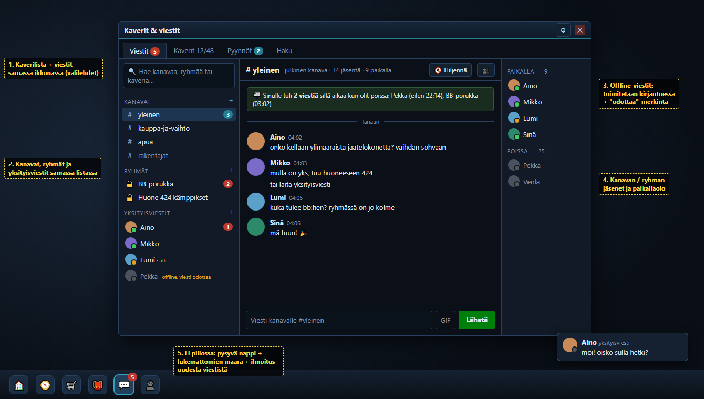

Kaverit & viestit — luonnos
Robo, 10.10.2026 klo 04. Luonnos keskustelun pohjaksi. Mitään ei ole vielä koodattu.

Mitä korjaa (Resin lista 04:13)
- Piilotettu → pysyvä 💬-nappi työkalupalkissa, siinä lukemattomien määrä. Uusi viesti näkyy ilmoituksena kulmassa.
- Ei kanavia → julkiset kanavat (#yleinen, #kauppa, #apua…), joihin kuka tahansa voi liittyä.
- Ei ryhmiä → kutsuttavat ryhmäkeskustelut.
- Ei offline-viestejä → viesti tallentuu ja toimitetaan, kun vastaanottaja kirjautuu.
- Monta ikkunaa → kaverilista ja viestit samassa ikkunassa välilehtinä (Viestit · Kaverit · Pyynnöt · Haku).
Palvelinpuoli (Daybreak-plugin, kuten muut kuplan pluginit)
- Offline-viestit: nyt
MessengerBuddy.onMessageReceivedpalaa heti, jos vastaanottaja ei ole paikalla, ja viesti katoaa. Muutos: tallennus tauluunmessenger_offline→ toimitus kirjautuessa. ClientinNewConsoleMessage-paketissa on jo kenttä "sekuntia sitten", joten vanha viesti näkyy oikealla ajalla. - Ryhmät: taulut
messenger_groups+messenger_group_members+ viestit. Lähetys vain paikalla oleville jäsenille, historia N viimeistä viestiä. - Kanavat: taulu
messenger_channels(nimi, kuka saa kirjoittaa, minimi-rank) + historia. Liittyminen ja poistuminen omilla paketeilla. - Suojat: sanasuodatin (jo olemassa kaverichatille), nopeusraja, ilmianto, staffille hiljennys ja loki.
Järjestysehdotus (pienestä isoon)
- Offline-viestit. Pienin muutos, suurin hyöty, ei uutta UI:ta.
- Uusi ikkuna (kaverit + viestit + näkyvyys) nykyisillä yksityisviesteillä.
- Ryhmät.
- Kanavat.
Jokainen vaihe oma PR. Client-osat ensin userscriptinä kokeiltavaksi.